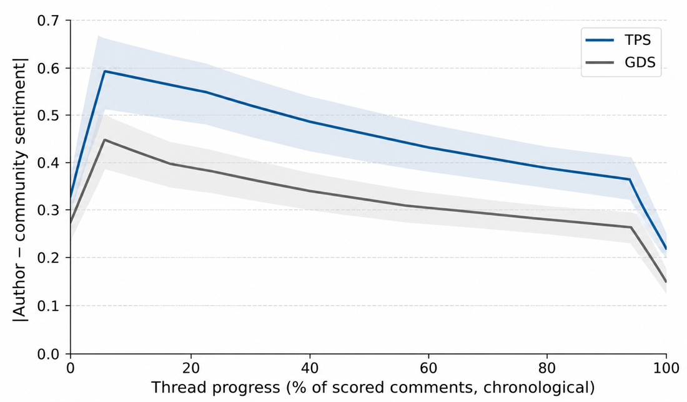

RISE Seminar · September 24, 2026 · Berhe Lab, University of the Pacific
S. Berhe, M. Maynard, F. Khomh · Procedia Computer Science 170:618–625 · EDI40 2020, Warsaw
Rewriter: from “more stable?” to “recent major updates?”
Retriever: changelogs, from human to static bots
Evaluator: aggregate risk, from any time to a stable time
Latest Zoom update, from Zoom’s public changelog page (Source: Zoom changelog)
Data: 3,742 components, 8,537 changelogs, Jan 2018 to Jul 2019
Retriever Bots
Evaluator
In the yearly aggregate, the most coinciding updates fall in mid-January and mid-week.
S. Berhe, M. Maynard, F. Khomh · Procedia Computer Science 220:608–615 · EDI40 2023, Leuven
Rewriter: from “Zoom or Teams?” to “Zoom or Teams with Chrome, Safari, or Firefox Stack?”
Retriever: from a list to a graph
Evaluator: from release timing to ecosystem cost
Model as in the paper; shared tag or vendor in Data Lake, 2026-09-20
Data: last 50 updates per use case
Retriever
Evaluator
| Component | Links | Versions | Major ×5 | CVEs | Cost |
|---|---|---|---|---|---|
| Chrome | 1 | 27 | 0 | 4 | 42 |
| Firefox | 0 | 6 | 1 | 4 | 23 |
| Safari | 1 | 1 | 1 | 0 | 9 |
| Zoom | 0 | 2 | 0 | 0 | 2 |
| Teams | 0 | 1 | 0 | 0 | 1 |
| Windows | 1 | 1 | 0 | 16 | 52 |
| macOS | 1 | 1 | 1 | 10 | 39 |
Update cost from 2026-08-30 to 2026-09-20
Latest Safari update, from Apple’s changelog (Source: Safari 27 changelog)
S. Berhe, V. Kan, O. Khan, N. Pader, A. Z. Farooqui, M. Maynard, F. Khomh · Procedia Computer Science 238:618–622 · EDI40 2024, Hasselt
Lead student authors: Vanessa Kan, Omhier Khan, Nathan Pader, Ali Zain Farooqui (University of the Pacific)
Rewriter: from “Zoom or Teams with Chrome, Safari, or Firefox?” to “Zoom or Teams and which Browser Stack?”
Retriever: from naming each browser to a component type: Zoom and Teams depend on a Browser, which depends on an Operating System
Evaluator: from semantic versions to changelog text
Component types from the paper’s classifier, members from Data Lake, 2026-09-20
Data: 1,000 changelogs sampled from 55,232 (20 repos)
Fig. 1 of the paper
| Component | Component type |
|---|---|
| Zoom | video conferencing |
| Teams | video conferencing |
| Chrome | browser |
| Firefox | browser |
| Safari | browser |
Source: Data Lake API, 2026-09-20
Reads as browser (Source: Mozilla changelog)
B. Singh, S. Daftary, M. Rudra, S. Veed, S. Berhe, M. Maynard, F. Khomh · Competitive Tools, Techniques, and Methods (OkIP 2024)
Lead student author: Bhavya Singh · with S. Daftary, M. Rudra, S. Veed (University of the Pacific)
Rewriter: from “Zoom or Teams and which Browser Stack?” to “Zoom or Teams and which Browser Stack including user feedback?”
Retriever: from changelogs only to changelogs plus Reddit
Evaluator: from what changelogs say to what users report
Real posts, Aug 30 to Sep 20, shown as the paper enriches a changelog (Source: Data Lake API, 2026-09-20)
Data: 9 components, 100+ Reddit posts each
breaking = [
"400", "401", "402", "403", "404", ..., "511",
"broken", "breaking", "error", "exception",
"privacy", "legal", "terms", "conditions",
"hipaa", "password", "bluetooth",
"authentication", "authorization",
"compliance", "breach", "leak",
"confidentiality", "integrity", "availability",
"audit", "gdpr", "ccpa", "sox", "pci",
"performance", "slow", "wifi", "restart",
"sign in", "glitch", "weird", "stutter",
"system crash", "app keeps crashing",
"login failed", "update failed",
"reset required", "freezing", "hanging", ...
]| Component | Changelogs | Posts | On an update | With a version |
|---|---|---|---|---|
| Zoom | 2 | 14 | 5 | 2 |
| Teams | 1 | 4 | 0 | 1 |
| Safari | 1 | 0 | 0 | 0 |
| macOS | 1 | 27 | 18 | 21 |
Source: Reddit, 2026-09-20
S. P. Veed, S. M. Daftary, B. Singh, M. Rudra, S. Berhe, M. Maynard, F. Khomh · SDIoTSec 2025 (NDSS), San Diego
Lead student author: S. Parambatheveed · with students S. M. Daftary, B. Singh, M. Rudra
Rewriter: extend “Zoom or Teams and which Browser Stack including user feedback?” with “Is my answer consistent with what users want?”
User: from unstudied to a 52-user survey
Evaluator: from our own scores to user criteria
Percentages: paper’s survey of 52 users. Consistency: our check (Source: SDIoTSec 2025)
Data: 52 participants (students, professionals, staff)
| Survey question | % |
|---|---|
| Update only when prompted (reactive) | 60% |
| Safety is a motivator | 56% |
| Prefer security updates over feature updates | 62% |
| Prefer minimally disruptive notifications | 72% |
| Prefer automatic updates | 65% |
V. Kan, M. P. Lnu, S. Berhe, C. El Kari, M. Maynard, F. Khomh · Procedia Computer Science 257:834–841 · EDI40 2025, Patras
Lead student author: Vanessa Kan · with M. P. Lnu (University of the Pacific)
Rewriter: from “Is my answer consistent with what users want?” to “What would this update disrupt?”
Retriever: from a changelog graph to a changelog hierarchy standard diagram
Arrows: depends on. CVEs: last 3 weeks (Source: Data Lake API, 2026-09-20)
Data: 80k+ updates, 16k+ components
Fig. 1 of the paper
Ecosystem view after Fig. 2 of the paper. Data: Data Lake API, 2026-09-20.
F. Shaikh, S. Berhe · Procedia Computer Science 280:913–920 · EDI40 2026, Istanbul
Lead student author: Farheen Shaikh
User: from static questions to open questions: version, patch, CVE, comparison, how-to, opinion
Evaluator: from answering anyway to abstaining without evidence
Orchestrator: from human to one fixed pipeline
One prompt: the Rewriter question from each of papers 1 to 6
Data: 20 queries (10 version, 5 patch, 5 CVE)
RAG and LLM from the repo, not named in the paper (Source: GitHub)
Fig. 1 of the paper
| Query type | Total | Answered | Abstained | Hallucinated |
|---|---|---|---|---|
| Version | 10 | 7 | 3 | 0 |
| Patch | 5 | 5 | 0 | 0 |
| CVE | 5 | 4 | 1 | 0 |
| Overall | 20 | 16 | 4 | 0 |
Zero hallucinated outputs across 20 queries, ~3 s each.
Source: EDI40 2026
F. M. Fahad, S. Berhe · OkIP CAIF 2026, Oklahoma City · April 1, 2026
Lead student author: Fnu Mohammed Fahad
Rewriter: from “Zoom or Teams and which Browser Stack including user feedback?” to “Zoom or Teams and Browser Stack with feedback, last 3 weeks (Aug 30 to Sep 20)?”
Retriever: from a vendor filter to semantic retrieval by intention
Evaluator: from a filter by vendor to a live-first merge
Orchestrator: from a fixed pipeline to a router that picks the data source
Releases in the window (Source: Data Lake API, 2026-09-20)
Data: 1,200 updates, 248 Reddit threads, 312 CVEs
Architecture as in the OkIP CAIF talk
| Baseline | Improved | |
|---|---|---|
| Data | Imported CSV only | Realtime APIs + RAG |
| Query | Keywords, vendor name | Whole sentence, dated |
| Review | Every update by hand | Filtered results |
Alias map pattern (Source: ReleaseNotesRec-Agent, src/app.py)
Firefox lists no GitHub Releases (Source: GitHub API, 2026-09-20)
Berhe Lab · reviewer verdict: a model is not enough without a benchmark
Lead student authors: Vy Nguyen and Ravi Pareshbhai Kakadia (University of the Pacific)
Rewriter: from “Zoom or Teams and Browser Stack with feedback and only latest update, last 3 weeks (Aug 30 to Sep 20)?” to “Did the latest versions of Zoom or Teams show any community update risks?”
Retriever: from stored threads to a live open text stream with an update risk filter
Scores of real Reddit posts (Source: Berhe Lab, 2026)
Data: 4,028 labeled Reddit posts, 3.3% positive
Fig. 1 of the paper
High > 0.7, Medium 0.5 to 0.7, Low < 0.5 (0.5 is the flag threshold). Only one Zoom post is scored so far; none for Teams. Data: Data Lake API, 2026-09-20.
Numbers from the paper
M. M. Jiss, S. Berhe · University of the Pacific
Lead student author: Manu Mathew Jiss
Retriever: from every similar thread to a filter for technical problems that impact Zoom or Teams stability
Labels: our reading of real posts, classes from the paper (Source: Reddit, 2026-09-20)
Data: TPSGDS-542, 542 threads (86 TPS, 456 GDS)
Fig. 2 of the paper

Fig. 5 of the paper
S. D. Pujari, S. Berhe · Workshop on Agentic Software Engineering (AgenticSE '26), San Jose
Lead student author: Shradha Devendra Pujari
Rewriter: from “Did the latest versions of Zoom or Teams show any community update risks?” to “Do you recommend browser-based Zoom or Teams for my important meeting?”
Retriever: from a live risk filter to vendor-aware search
Evaluator: from a merge rule to a 0 to 1 score with retry
Orchestrator: from a source router to a team that delegates
Retrieval quality on 50 questions: one agent 0.680, four roles 0.798, +17.2% (Source: AgenticSE 2026)
Data: 50 real questions, five categories
Fig. 2 of the paper
Table 1 of the paper
Data: same judge and corpus, 10 to 300 questions
Bug and fix (Source: Berhe Lab, 2026)
Standard metrics, n = 10 (Source: Berhe Lab, 2026)
ReleaseTrain's own Ask pipeline picker
Before: Auto picked from five presets named for what changed under the hood (multi_agent_fixed, multi_agent_buggy, multi_agent_feedback...); a question like “Is there a known CVE in the latest Zoom update?” ran a one-loop pipeline with capability flags, not real delegation.
After: Two presets that match this paper directly: orchestrator_single does everything itself, orchestrator_delegated spawns a real Rewriter, Retriever, and Evaluator. Auto now routes by the question's own classified intent, so that same CVE question gets real role delegation.
Auto: 5 preset names, only cve/patch got union-search-and-rerank
Auto: 2 presets, comparison/cve/patch/general all get real delegation
One limit this shipped without fixing: a comparison question (“Which is more stable right now, Zoom or Teams?”) still bypasses both presets entirely and always runs one fixed model call, same as before, since that path was never architecture-dependent.